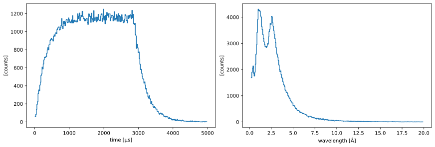
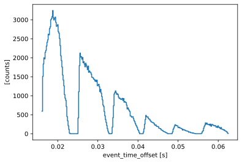
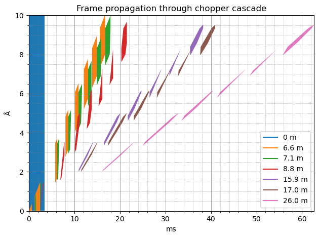
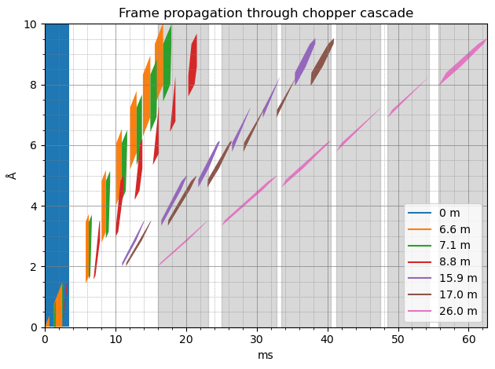
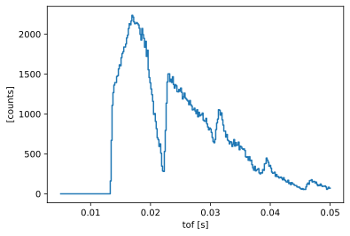
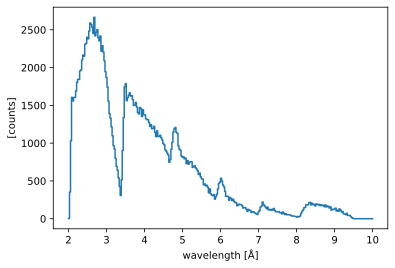
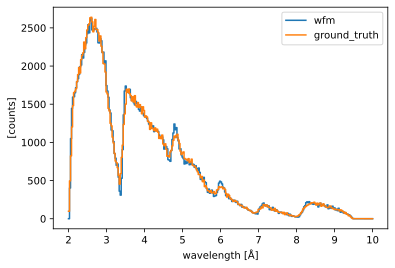

Computing time-of-flight for WFM data#
Wavelength-frame-multiplication (WFM) is a technique commonly used at long-pulse facilities to improve the resolution of the results measured at the neutron detectors. See for example the article by Schmakat et al. (2020) for a description of how WFM works.
In this notebook, we show how to use Scippneutron’s tof module to find the boundaries of the WFM frames, and apply a time correction to each frame, in order to obtain more accurate a time-of-flight coordinate, from which a wavelength can be computed.
[1]:
import numpy as np
import plopp as pp
import scipp as sc
import sciline as sl
from scippneutron.chopper import DiskChopper
from scippneutron.tof import unwrap
from scippneutron.tof import chopper_cascade
Setting up the beamline#
Creating the beamline choppers#
We begin by defining the chopper settings for our beamline. In principle, the chopper setting could simply be read from a NeXus file.
For this example, we create choppers modeled on the V20 ESS beamline at HZB. It consists of 5 choppers:
2 WFM choppers
2 frame-overlap choppers
1 pulse-overlap chopper
The first 4 choppers have 6 openings (also known as cutouts), while the last one only has a single opening.
[2]:
wfm1 = DiskChopper(
frequency=sc.scalar(-70.0, unit="Hz"),
beam_position=sc.scalar(0.0, unit="deg"),
phase=sc.scalar(-47.10, unit="deg"),
axle_position=sc.vector(value=[0, 0, 6.6], unit="m"),
slit_begin=sc.array(
dims=["cutout"],
values=np.array([83.71, 140.49, 193.26, 242.32, 287.91, 330.3]) + 15.0,
unit="deg",
),
slit_end=sc.array(
dims=["cutout"],
values=np.array([94.7, 155.79, 212.56, 265.33, 314.37, 360.0]) + 15.0,
unit="deg",
),
slit_height=sc.scalar(10.0, unit="cm"),
radius=sc.scalar(30.0, unit="cm"),
)
wfm2 = DiskChopper(
frequency=sc.scalar(-70.0, unit="Hz"),
beam_position=sc.scalar(0.0, unit="deg"),
phase=sc.scalar(-76.76, unit="deg"),
axle_position=sc.vector(value=[0, 0, 7.1], unit="m"),
slit_begin=sc.array(
dims=["cutout"],
values=np.array([65.04, 126.1, 182.88, 235.67, 284.73, 330.32]) + 15.0,
unit="deg",
),
slit_end=sc.array(
dims=["cutout"],
values=np.array([76.03, 141.4, 202.18, 254.97, 307.74, 360.0]) + 15.0,
unit="deg",
),
slit_height=sc.scalar(10.0, unit="cm"),
radius=sc.scalar(30.0, unit="cm"),
)
foc1 = DiskChopper(
frequency=sc.scalar(-56.0, unit="Hz"),
beam_position=sc.scalar(0.0, unit="deg"),
phase=sc.scalar(-62.40, unit="deg"),
axle_position=sc.vector(value=[0, 0, 8.8], unit="m"),
slit_begin=sc.array(
dims=["cutout"],
values=np.array([74.6, 139.6, 194.3, 245.3, 294.8, 347.2]),
unit="deg",
),
slit_end=sc.array(
dims=["cutout"],
values=np.array([95.2, 162.8, 216.1, 263.1, 310.5, 371.6]),
unit="deg",
),
slit_height=sc.scalar(10.0, unit="cm"),
radius=sc.scalar(30.0, unit="cm"),
)
foc2 = DiskChopper(
frequency=sc.scalar(-28.0, unit="Hz"),
beam_position=sc.scalar(0.0, unit="deg"),
phase=sc.scalar(-12.27, unit="deg"),
axle_position=sc.vector(value=[0, 0, 15.9], unit="m"),
slit_begin=sc.array(
dims=["cutout"],
values=np.array([98.0, 154.0, 206.8, 255.0, 299.0, 344.65]),
unit="deg",
),
slit_end=sc.array(
dims=["cutout"],
values=np.array([134.6, 190.06, 237.01, 280.88, 323.56, 373.76]),
unit="deg",
),
slit_height=sc.scalar(10.0, unit="cm"),
radius=sc.scalar(30.0, unit="cm"),
)
pol = DiskChopper(
frequency=sc.scalar(-14.0, unit="Hz"),
beam_position=sc.scalar(0.0, unit="deg"),
phase=sc.scalar(0.0, unit="deg"),
axle_position=sc.vector(value=[0, 0, 17.0], unit="m"),
slit_begin=sc.array(
dims=["cutout"],
values=np.array([40.0]),
unit="deg",
),
slit_end=sc.array(
dims=["cutout"],
values=np.array([240.0]),
unit="deg",
),
slit_height=sc.scalar(10.0, unit="cm"),
radius=sc.scalar(30.0, unit="cm"),
)
disk_choppers = {"wfm1": wfm1, "wfm2": wfm2, "foc1": foc1, "foc2": foc2, "pol": pol}
It is possible to visualize the properties of the choppers by inspecting their repr:
[3]:
wfm1
[3]:
- axle_positionscippVariable()vector3m[0. 0. 6.6]
- frequencyscippVariable()float64Hz-70.0
- beam_positionscippVariable()float64deg0.0
- phasescippVariable()float64deg-47.1
- slit_beginscippVariable(cutout: 6)float64deg98.71, 155.490, ..., 302.910, 345.3
- slit_endscippVariable(cutout: 6)float64deg109.7, 170.790, ..., 329.370, 375.0
- slit_heightscippVariable(cutout: 6)float64cm10.0, 10.0, ..., 10.0, 10.0
- radiusscippVariable()float64cm30.0
Adding a detector#
We also have a detector, which we place 26 meters away from the source.
[4]:
Ltotal = sc.scalar(26.0, unit="m")
Convert the choppers#
Lastly, we convert our disk choppers to a simpler chopper representation used by the chopper_cascade module.
[5]:
choppers = {
key: chopper_cascade.Chopper.from_disk_chopper(
chop, pulse_frequency=sc.scalar(14.0, unit="Hz"), npulses=1
)
for key, chop in disk_choppers.items()
}
Creating some neutron events#
We create a semi-realistic set of neutron events based on the ESS pulse.
[6]:
from scippneutron.tof.fakes import FakeBeamlineEss
ess_beamline = FakeBeamlineEss(
choppers=choppers,
monitors={"detector": Ltotal},
run_length=sc.scalar(1 / 14, unit="s") * 14,
events_per_pulse=200_000,
)
The initial birth times and wavelengths of the generated neutrons can be visualized (for a single pulse):
[7]:
one_pulse = ess_beamline.source.data["pulse", 0]
one_pulse.hist(time=300).plot() + one_pulse.hist(wavelength=300).plot()
[7]:

From this fake beamline, we extract the raw neutron signal at our detector:
[8]:
raw_data = ess_beamline.get_monitor("detector")
# Visualize
raw_data.hist(event_time_offset=300).sum("pulse").plot()
[8]:

The total number of neutrons in our sample data that make it through the to detector is:
[9]:
raw_data.sum().value
[9]:
203715.0
Using the chopper cascade to chop the pulse#
The chopper_cascade module can now be used to chop a pulse of neutrons using the choppers created above.
Create a pulse of neutrons#
We then create a (fake) pulse of neutrons, whose time and wavelength ranges cover our ESS pulse above:
[10]:
time_min = sc.scalar(0.0, unit='ms')
time_max = sc.scalar(3.4, unit='ms')
wavs_min = sc.scalar(0.01, unit='angstrom')
wavs_max = sc.scalar(10.0, unit='angstrom')
frames = chopper_cascade.FrameSequence.from_source_pulse(
time_min=time_min,
time_max=time_max,
wavelength_min=wavs_min,
wavelength_max=wavs_max,
)
Propagate the neutrons through the choppers#
We are now able to propagate the pulse of neutrons through the chopper cascade, chopping away the parts of the pulse that do not make it through.
For this, we need to decide how far we want to propagate the neutrons, by choosing a distance to our detector. We set this to 32 meters here.
[11]:
# Chop the frames
frames = frames.chop(choppers.values())
# Propagate the neutrons to the detector
at_sample = frames.propagate_to(Ltotal)
# Visualize the results
cascade_fig, cascade_ax = at_sample.draw()

We can now see that at the detector (pink color), we have 6 sub-pulses of neutrons, where the longest wavelength of one frame is very close to the shortest wavelength of the next frame.
Computing the time-of-flight coordinate using Sciline#
Setting up the workflow#
We will now construct a workflow to compute the time-of-flight coordinate from the neutron events above, taking into account the choppers in the beamline.
[12]:
workflow = sl.Pipeline(
unwrap.unwrap_providers()
+ unwrap.time_of_flight_providers()
+ unwrap.time_of_flight_origin_from_choppers_providers(wfm=True)
)
workflow[unwrap.PulsePeriod] = sc.reciprocal(ess_beamline.source.frequency)
workflow[unwrap.PulseStride | None] = None
workflow[unwrap.SourceTimeRange] = time_min, time_max
workflow[unwrap.SourceWavelengthRange] = wavs_min, wavs_max
workflow[unwrap.Choppers] = choppers
workflow[unwrap.Ltotal] = Ltotal
workflow[unwrap.RawData] = raw_data
workflow.visualize(unwrap.TofData)
[12]:

Checking the frame bounds#
We can check that the bounds for the frames the workflow computes agrees with the chopper-cascade diagram
[13]:
bounds = workflow.compute(unwrap.FrameAtDetector).subbounds()
bounds
[13]:
- timescippVariable(subframe: 6, bound: 2)float64s0.016, 0.023, ..., 0.056, 0.063
- wavelengthscippVariable(subframe: 6, bound: 2)float64Å2.007, 3.514, ..., 7.964, 9.528
[14]:
for b in sc.collapse(bounds["time"], keep="bound").values():
cascade_ax.axvspan(
b[0].to(unit="ms").value,
b[1].to(unit="ms").value,
color="gray",
alpha=0.3,
zorder=-5,
)
cascade_fig
[14]:

There should be one vertical band matching the extent of each pink polygon, which there is.
Computing a time-of-flight coordinate#
We will now use our workflow to obtain our event data with a time-of-flight coordinate:
[15]:
tofs = workflow.compute(unwrap.TofData)
tofs
[15]:
- pulse: 14
- Ltotal()float64m19.4
Values:
array(19.4)
- (pulse)DataArrayViewbinned data [len=14396, len=14450, ..., len=14797, len=14571]
dim='event', content=DataArray( dims=(event: 203715), data=float64[counts], coords={'id':int64, 'toa':float64[µs], 'event_time_offset':float64[s], 'time_offset':float64[s], 'pulse_time':datetime64[µs], 'tof':float64[s], 'time_zero':datetime64[µs]}, masks={'blocked_by_others':bool})
Histogramming the data for a plot should show a profile with 6 bumps that correspond to the frames:
[16]:
edges = sc.linspace("tof", 0.005, 0.05, 300, unit="s")
tofs.bins.concat().hist(tof=edges).plot()
[16]:

Converting to wavelength#
We can now convert our new time-of-flight coordinate to a neutron wavelength, using tranform_coords:
[17]:
from scippneutron.conversion.graph.beamline import beamline
from scippneutron.conversion.graph.tof import elastic
# Perform coordinate transformation
graph = {**beamline(scatter=False), **elastic("tof")}
wav_wfm = tofs.transform_coords("wavelength", graph=graph)
# Define wavelength bin edges
wavs = sc.linspace("wavelength", 2, 10, 301, unit="angstrom")
wav_wfm.hist(wavelength=wavs).sum("pulse").plot()
[17]:

Comparing to the ground truth#
As a consistency check, because we actually know the wavelengths of the neutrons we created, we can compare the true neutron wavelengths to those we computed above.
[18]:
ground_truth = ess_beamline.model_result["detector"].data.flatten(to="event")
ground_truth = ground_truth[~ground_truth.masks["blocked_by_others"]]
pp.plot(
{
"wfm": wav_wfm.hist(wavelength=wavs).sum("pulse"),
"ground_truth": ground_truth.hist(wavelength=wavs),
}
)
[18]:
